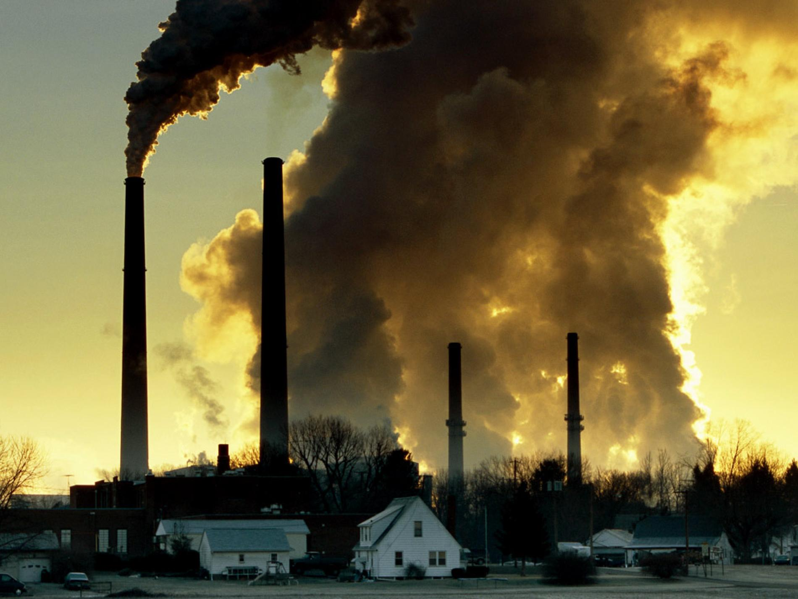

10 Things You Can Do To Make A Difference
1. Get involved
Take a few minutes to contact your political representatives and the media to tell them you want immediate action on climate change. Remind them that reducing greenhouse gas emissions will also build healthier communities, spur economic innovation and create new jobs. And next time you’re at the polls, vote for politicians who support effective climate policies.2. Be energy fficient
You already switch off lights — what’s next? Change light bulbs to compact fluorescents or LEDs. Unplug computers, TVs and other electronics when not in use. Wash clothes in cold or warm (not hot) water. Dryers are energy hogs, so hang dry when you can. Install a programmable thermostat. Look for the Energy Star® label when buying new appliances.3. Choose renewable power
Ask your utility to switch your account to clean, renewable power, such as from wind farms. If it doesn’t offer this option yet, ask it to. By understanding the current and potential environmental issues associated with each renewable energy source, we can takes steps to effectively avoid or minimize these impacts as they become a larger portion of our electric supply.4. Eat wisely
Buy organic and locally grown foods. Avoid processed items. Grow some of your own food. And eat low on the food chain — at least one meat-free meal a day — since 18 per cent of greenhouse gas emissions come from meat and dairy production. Food writer Michael Pollan sums it up best: “Eat food. Not too much. Mostly plants.”5. Trim your waste
Garbage buried in landfills produces methane, a potent greenhouse gas. Keep stuff out of landfills by composting kitchen scraps and garden trimmings, and recycling paper, plastic, metal and glass. Let store managers and manufacturers know you want products with minimal or recyclable packaging.

6. Let polluters pay
Carbon taxes make polluting activities more expensive and green solutions more affordable, allowing energy-efficient businesses and households to save money.